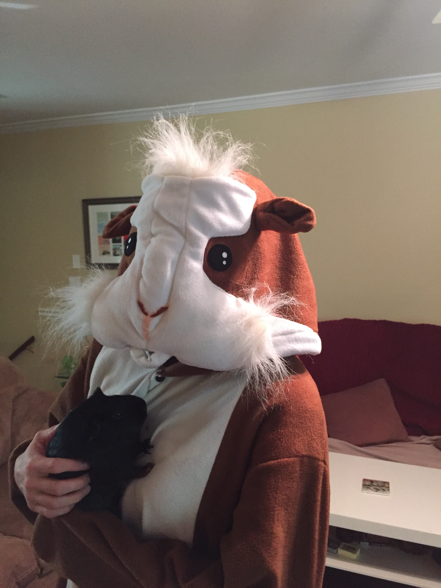
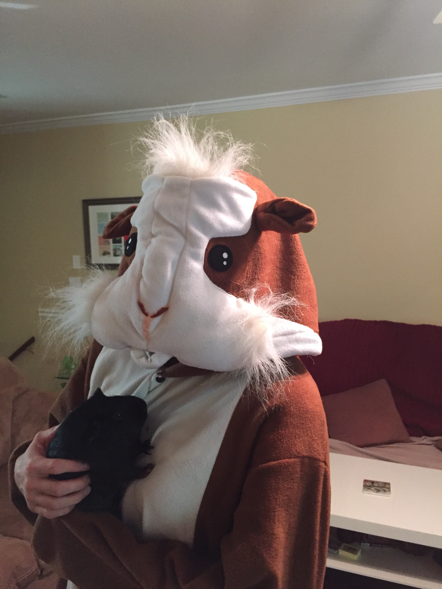

Skills and Tools
• CSS3 • (Fundamental) JS and jQuery • Git/Gibhub • HTML5 •Illustrator • InDesign • inVision • Photoshop • Responsive Web Design • Skeleton • SASS • Sketch • UI Design
Working On
• Design Thinking • JS and jQuery • WordPress
I'm obsessed with coding, books, history, popcorn, squirrels, swimming and traveling. I'm one of those annoying people that always trys to find the positive and my sense of humor usually has me laughing. Social media or having to navigate or run any distance over a quarter mile leaves me exhausted.
I've always had a passion for layouts and design, which is why I majored in Graphic Design at Gardner Webb University. I worked as a Graphic Designer for four years at a medical distribution company. Almost immediately after graduation I started attempting to self-teach myself web design. However everything I learned felt random and I was perplexed in how it all connected. Which lead me to The Iron Yard.
Here at The Iron Yard I've spent 12 weeks dedicating 60 hours a week to learning UI design. All the random puzzle pieces I had in my head from the years of self teaching have come together. It's been an incredible experince one; that I would recommend to anyone who is passionate about coding.
It's almost impossible for me not to give 100%. Years of competitive swimming and my faith have shaped my work ethic. I started swimming when I was 8 and worked to be the best I could be. This lead to a scholarship to compete at a Divison I school. Having to balance academics and competeing at a collegiate level for four years continued to better shape and cement my work ethic and my ability to prioritize. I have been given so much and I understand it is by grace, not entitlement. This constant thought keeps me humble. I don't know why I'm blessed, but I'm determined everyday not to waste any opportunity given.
Once you get to know me you'll see why people describe me as 'Determined', 'Solid' and sometimes 'Stubborn' because I can never give up.